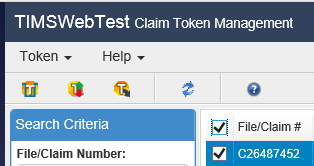
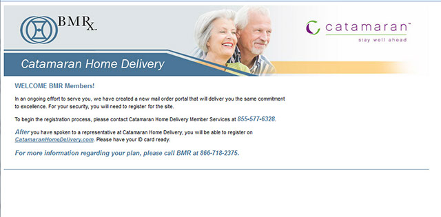
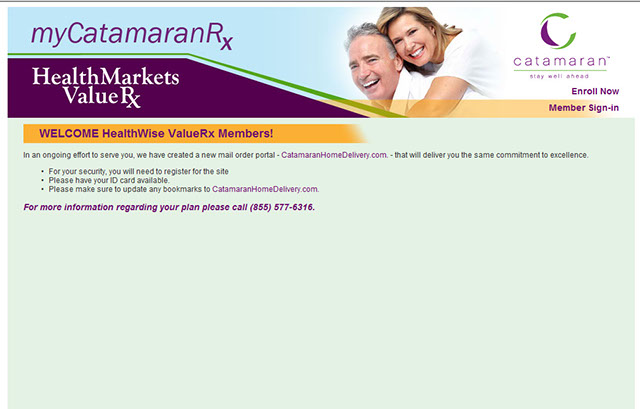
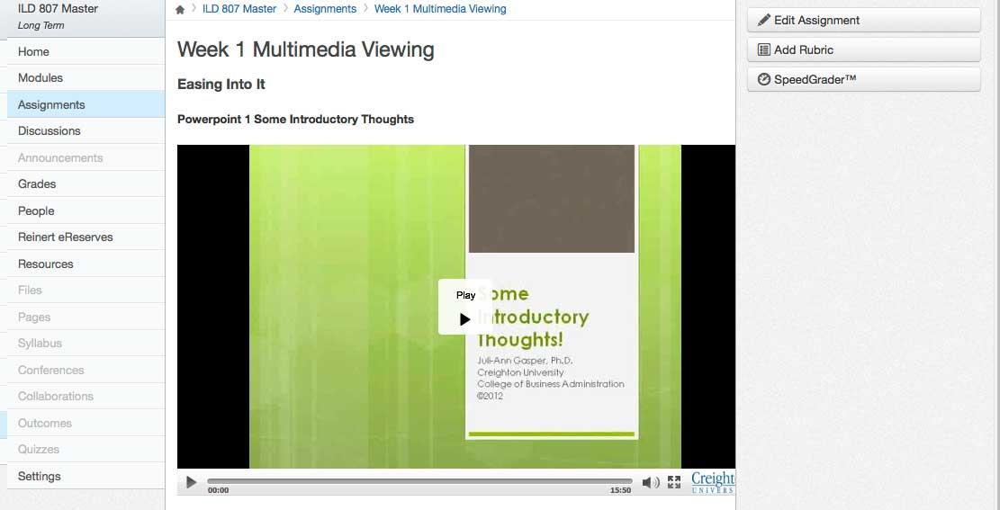
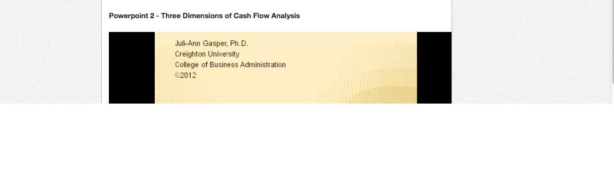
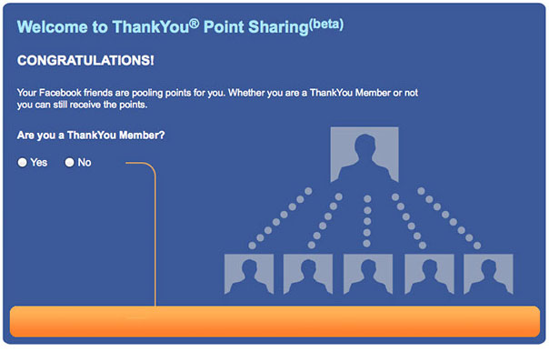
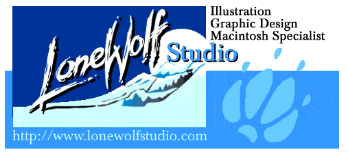
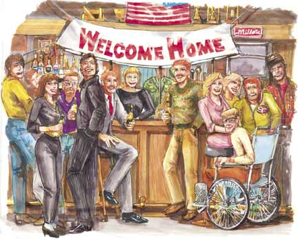

-
Web Site Design
To promote my freelance illustration and design business for clients such as Revell Monogram, Sportmart in 1992, a website was developed for Lone Wolf Studio. Originally, the site offered those services plus HTML web authoring for a limited client group. Client List
-
Visual Design
Creative Advertising for Business DevelopmentCreating samples using digital illustration, graphic design and page layout were an attempt to grow Lone Wolf Studio into a more viable venture. To complete the projects that represented a step forward, several clients were given new formats.
Click on any image view a gallery of images. Click on Part One to toggle the text.
Journey Profiles and Designs
Examples of Digital Design and Web Design projects executed for a variety of clients. Each Project has a separate process with different goals, usually set by the client or stakeholder.
Web Designer Roles (1993-present)


-
Web Design Use Case
Corporate Web Site Relaunch (1997)
“Methode business units must provide internet communications consistent with our corporate message.” Chairman Emeritis Bill McGinley.
In 1996 the Fiber Optics Group of Methode Electronics, Inc. was the fastest growing unit in a company with a capitalization value of $550M and rising. The Graphics Manager was a new position, charged with making the process of creating marketing collateral and advertisements directly for that division.
Part One Polling the Stake Holders and Determining Policies
Methode.com Main Home Page, circa 1996.
The inital home page design was a simple directory to corporate information. The business units were in largely unrelated industries, with no coordination or commmon sales organization.The most important message was stresssing capabilities for each business unit, providing custom, and not cataloging current products.
A steering group was created by inviting representatives from Corporate Marketing, Corporate Information Technology, the Developer in charge of the website, and a few knowledgable business unit representatives. Charged with integrating fourteen independent business units of the company into a single website, corporate directives and plans were to be developed “by concensus” from the Executive Vice-President and presented to the Chairman, the President and the Directors.
The dataMate Group, Fiber Optic Group and several other business units were to be served with completely new content and page templates, while others were merely ported over to the new site. The format required extensive revisions, due to the lack of a functional database, an overall deployment plan, and a comprehensive content policy.
Part Two Re-Launch Methode Web Site (1998)
Solution: Web Site Mission Redefined
Educating the corporate stakeholders was the primary goal, followed by the polling of expectations from the key business unit stakeholders and determining the resources available. Policies were also studied. The business units leaders responded quickly with a revised list.Specifications
- Browser Requirements
- Windows IE5 as the primary web browser and cross-browser functionality for Netscape and other platforms secondary.
- Business Unit Identity
- Consistent Corporate Logo placement with derivative business unit identity
- Business Unit information
- Description of business activities, highlighting capabilities
- Product Listings
- Standard Product Categories and listing of available products
Issues
The concensus of the stakeholders determined that the cross-platform, identity and business information requirements be executed as part of the mission. The product catalog was not possible, although the President and several of the Business Managers requested the design be created. The outside vendor created the new layout and hosted the new site from their own Linux/Apache server. Part of the recommendation had also been to incorporate a form-based contact system, but it was scrapped.
The Information Technology Group made it clear that an SSL certificate-based system was beyond their capabilities with a Linux server. This would later be cited as a significant reason for the company to abandon Linux for Windows Server in 1999. The actual reason for not creating a product catalog in any media was not the expense or technology. It was the sales structure.
A “Standard Parts Catalog” had not been possible as a printed document for several years because over 80% of the company revenue, including all of the automotive components and network hardware, was derived from distributed sales of custom products. Almost all of the sales representatives were independent agents that used their own price lists. This would have required the company to create a distributed ecommerce site where the corporation would pass the costs on to the sales representatives and customers. It became clear that the job of Graphics Manager was most likely not a permanent situation when the product catalog project had to be dropped.
The main reason for hiring a Graphics Manager was the internalizing of advertising and product catalog production, which contributed to the position eventually being eliminated. The corporate policy was called a “Vertical Synergy Strategy”; aimed at creating vertical markets by eliminating “The Middle Man”. The Chairman had made reference to the massive growth of George Washington's Mount Vernon estates in the late-18th century as a prime example of using new technology to increase profits.
It was true that Washington was a widely acknowledged innovator in tobacco and staples horticulture at the time. Washington had introduced crop rotation and added direct processing and manufacturing facilities to his massive estate to reduce costs. Unfortunately, the corporation lacked the market domination and requisite captive labor force that made most well-managed 18th century plantations successful. For obvious reasons, that citation and the analysis of such a bizarre policy was omitted from the final report. The policy was finally ended after the passing of the Chairman Emeritis and the collapse of the stock market in 2001.
-

Online Identity for Radio-Frequency Connectors Business
Creating the online identity for a new Radio-Frequency Connectors business.
Additional Information including the dimensions and date produced, with client identification if allowable.
User Experience Design for Profiling
Four of the Fourteen Business Groups required complete online identity for their products. The Methode Electronics Fiber Optic Products Group had a landing page that featured a minimum content load. The corporate marketing group were only responsible for setting up the template, and the business unit was required to provide the content.


{kind=link}
{kind=link}
{kind=link}
{kind=link}
Other World Computing is a reseller and OEM dealer of computing components specializing in Apple Computing acccessories and everything mobile. OWC had been a successful ecommerce-only reseller, growing their business quickly through 2003. I launched a new advertising effort, and then began the task of bringing their sprawling website up to date.
-
MacSales Custom Front Page (2005)
Focused directly on specific product categories promotion, the custom front page included dynamic live pricing ranges and static images. There was a more flexible ad banner setup, including aside badges, a full size rotating banner area, and a featured blog teaser.
-
Newertech OEM Website (2006)
After acquiring the product portfolio for newertechnology in 2004, the leadership at OWC required new identity and marketing promotion for the mobile products-oriented line-up. The first significant product launched was the miniStack harddrive expansion enclosure. The miniStack was promoted as the feature in the new web site.
The three-person design team prepared and demonstrated the static promotional newertech.com website as a PHP application. The intention was integrate dynamic product presentations and a live-product link to the MacSales.com product landing pages for each line>
{kind=link}
{kind=link}
Timeline
TIMS CMS Web App
Edge Systems Warrenville, IL
User Interface Design
Mobile-first AJAX UI
Web-Help System
Section 508 Specialist

Detail of TIMS User Interface, including imnplementation of new icons for entire application
myCatamaranRx
Catamaran (now OptumRX) Schaumburg, IL
myCatamaranRX Development
Web Site Presentations


BMR-Rx and myCatRx Header Designs
LMS Conversion
Deltak Innovation, Inc. Oak Brook, IL
Canvas LMS User Interface
Optimize LMS Content
Multi-media Production


Kiosk & UI Design
Aspen Marketing Services West Chicago, IL
UI Specialist/Web Developer More
- Short-term assignment with Agile/MVC .Net agency
- Consumer-facing LAMP UI projects with HTML/CSS & jQuery
- Fortune 500 clients: FedEx, Citibank & Visa.

Full Cycle Web Development
Other World Computing Woodstock, IL
Lead Designer & Web Developer More
- Lead Creative for ecommerce reseller of mobile products
- Re-designed macsales.com & OEM site
- $28M in revenue from coordinated ad campaigns
- Managed production of ads & web designs
Corporate Website Relaunch
Methode Electronics, Inc.Harwood Heights, IL
Graphic Services & Web Projects Manager More
- Creative Lead & Manager for branded corporate web site
- Re-launched site for multiple business units with new content, concepts & wire-frames
- Corporate & product identity, & presentations
Freelance Web Development
Lone Wolf StudioProrietor
Graphic Services & Web Projects Manager More
- Self-employed web project manager and designer
- Designed lonewolfstudio.com as demonstration and advertising platform
- Corporate advertising projects for recruiting agency clients

Early Work
School of the Art Institute of Chicago
Visual Communications Major More
- Later: Flash Development and Training Practice
- Later: Digital Illustration and Graphic Design Training
- Fine Arts Illustration and Graphic Design

Use Cases for Creative Projects
PortalRx Development with Catamaran
The Catamaran Web Site is offline after its acquisition by United Health Corporation and incorporation into the OptumRx Prescription Benefits Management business. The Drug Tends “Insights” Presentation is preserved in the Web Archive Edition for 2015.
Develop Interactive charts using jQuery and HTML5. A basic chart bar chart with animation.
Donut Hole graphical charts
Infographics with interactive elements
Chris Bourseau
2005 Shepard Road
Hoffman Estates, IL 60169
email: crbourseau@gmail.com
Twitter: @lonewolfstudio
LinkedIn: chrisbourseau
Facebook: Lone Wolf Studio Page
Hoffman Estates, IL 60169
email: crbourseau@gmail.com
Twitter: @lonewolfstudio
LinkedIn: chrisbourseau
Facebook: Lone Wolf Studio Page